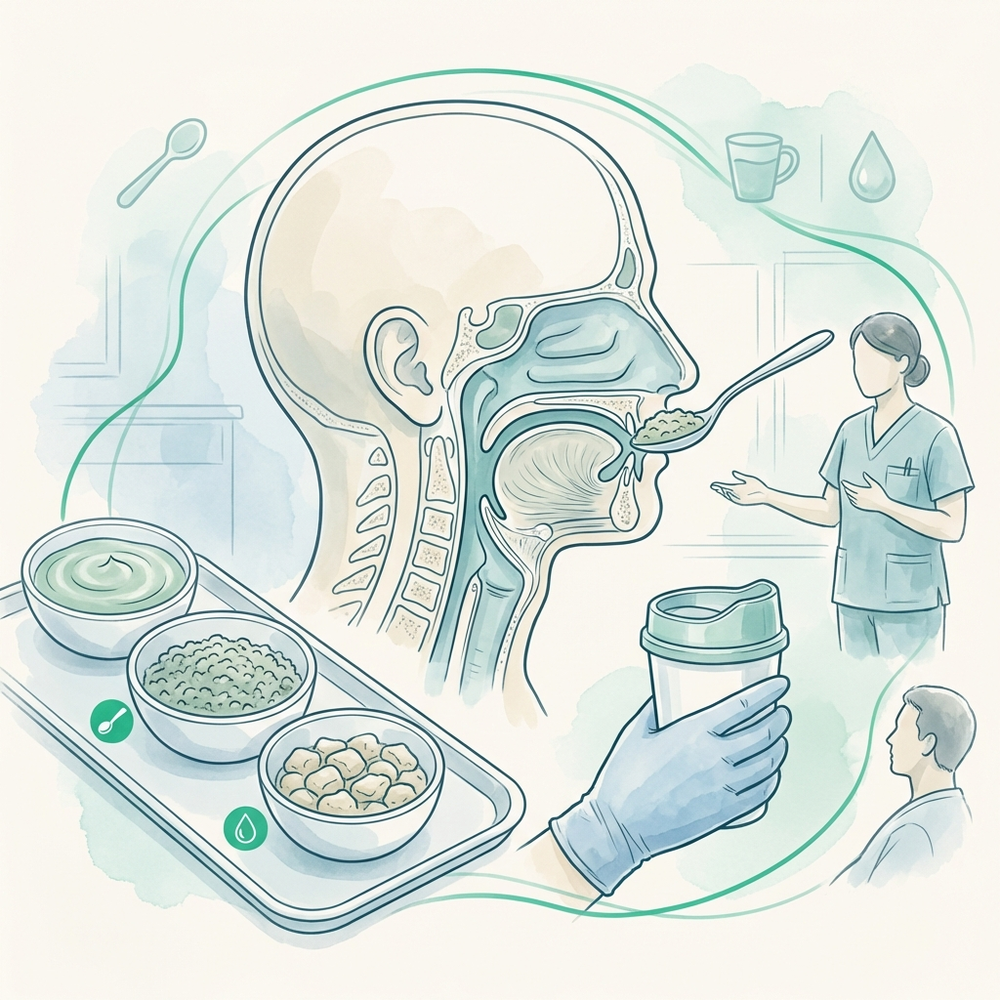

Nutrición Clínica para un Envejecimiento Exitoso
Intervención de soporte para preservar la independencia, la fuerza muscular y la calidad de vida en la etapa del adulto mayor.
El envejecimiento conlleva cambios metabólicos y fisiológicos que requieren un ajuste preciso en la alimentación. No se trata solo de comer menos, sino de comer mejor para proteger la masa muscular y las funciones cognitivas.
En Clínica Denki, nos enfocamos en protocolos de nutrición clínica que previenen la fragilidad, gestionan la sarcopenia y aseguran que el adulto mayor mantenga su vitalidad y autonomía el mayor tiempo posible.
Áreas de Soporte Geriátrico
Soluciones integrales para los desafíos nutricionales de la vejez.
Adulto Mayor
Prevención de deficiencias nutricionales y optimización de la dieta diaria según patologías.
Ver ServicioSarcopenia
Intervención clínica para detener y revertir la pérdida de músculo y fuerza física.
Ver Servicio
Dificultad al Tragar
Adaptación de texturas y técnicas de deglución segura para evitar desnutrición.
Más InformaciónDignidad y Ciencia en la Nutrición
Entendemos que la alimentación en el adulto mayor es clave para su bienestar emocional y físico.
Protege la Independencia de tus Seres Queridos
Inicia una evaluación geriátrica especializada y mejora la calidad de vida en el hogar.